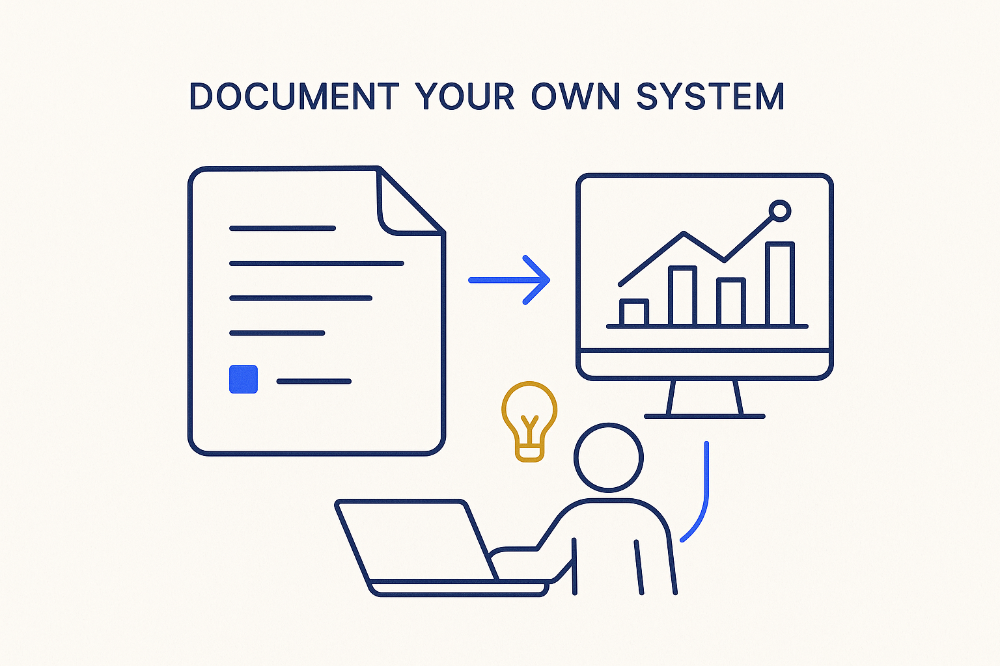

When you design systems, document the system you use to design them — features, requirements, decisions, Q&A, meeting minutes — and keep the technology under control instead of being overwhelmed by it.

> When you design systems, document the system you use to design them — features, requirements, decisions, Q&A, meeting minutes — and keep the technology under control instead of being overwhelmed by it.
When we design systems, we obsess over documenting the *target* — the data model, the pipelines, the platform. We rarely model and document the system we use to design it. That design system is real and it has structure: the features under discussion, the requirements behind them, the decisions and the reasons for them, the questions and their answers, the minutes of every meeting. Model your own systems, not only the client’s — capture that design process with the same discipline you apply to the thing you are building, and the how-we-decided stops living in people’s heads and email threads.
The tooling to do this finally exists. AI turns speech into text automatically; meetings become searchable records; requirements and decisions can be captured as structured markdown and YAML the moment they are made. The raw capability is no longer the constraint.
The new constraint is the opposite one: not being overwhelmed by the tools themselves. A new tool arrives every week, and it is easy to spend more energy chasing them than doing the work — or to burn tokens chatting with an AI that has no structured record behind it. So the discipline is to use the tools deliberately and keep the technology under control: one structured place where features, requirements, decisions and minutes land, versioned and readable by both people and AI. Control the tools, or the tools control you.
Where it lives: the attitude layer of Breakthrough Modeling — the design process is itself a system worth modeling.